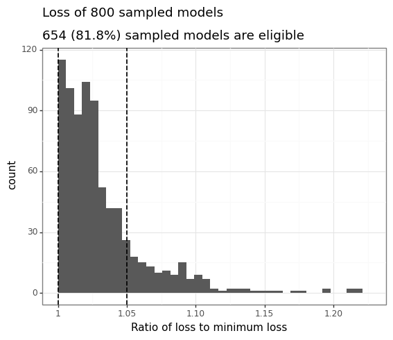
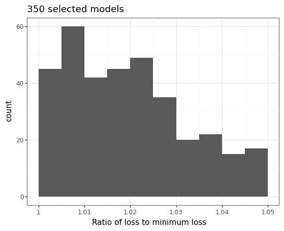
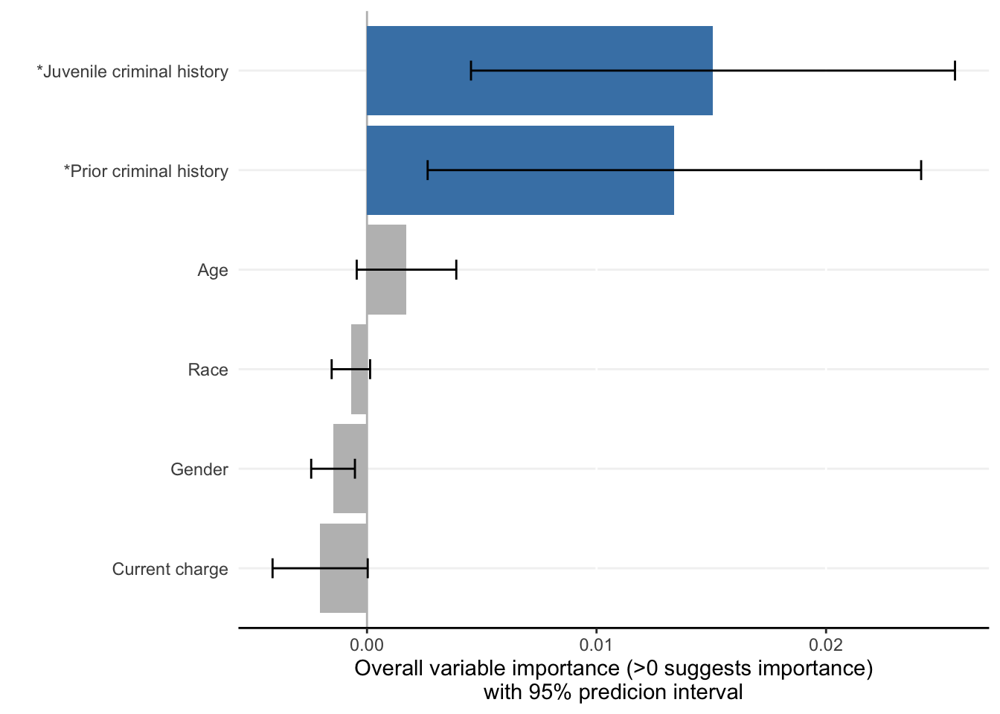
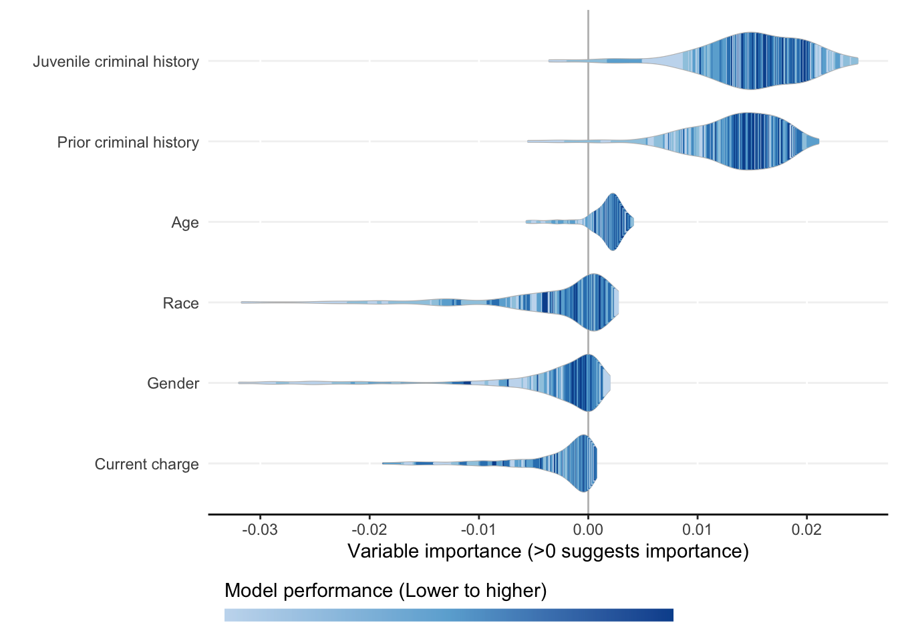
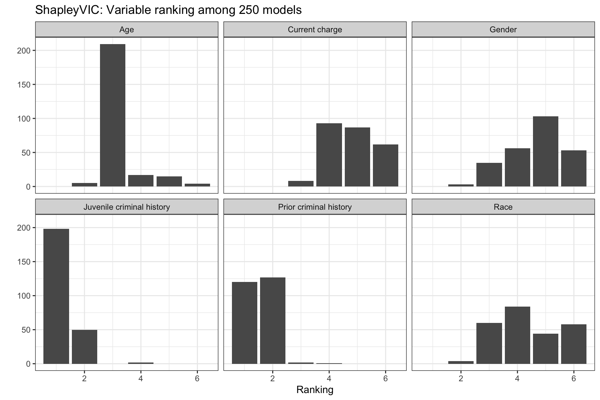

from ShapleyVIC import df_compas
compas = df_compas.load_data()
# See data description using the following command:
# help(df_compas.load_data)
compas.loc[:5]2 ShapleyVIC for Variable Importance Assessment
ShapleyVIC is model agnostic, and its benefits of has been demonstrated in empirical experiments in applications for multiple domains. This tutorial illustrates ShapleyVIC implementation using the Python library and R package in a study that predicts 2-year recidivism using a logistic regression of 6 binary variables.
Cite the following papers for ShapleyVIC:
- Ning Y, Ong ME, Chakraborty B, Goldstein BA, Ting DS, Vaughan R, Liu N. Shapley variable importance cloud for interpretable machine learning. Patterns 2022
2.1 [Python] ShapleyVIC calculation
This part of the ShapleyVIC workflow is implemented in Python.
In this part of the workflow, we load and prepare data, train optimal logistic regression model, generate nearly optimal models, and compute Shapley-based variable importance for each model.
2.1.1 Load data
- Read data from CSV or Excel files.
- For this demo, use the integrated data in the library that contains 7214 samples analyzed in Experiment 1 (i.e., the recidivism prediction study) of the paper.
| y | age | race | prior | gender | juvenilecrime | currentcharge | train_test |
|---|---|---|---|---|---|---|---|
| 0 | 0 | 0 | 1 | 1 | 1 | 0 | train |
| 1 | 0 | 1 | 1 | 1 | 1 | 0 | train |
| 1 | 0 | 1 | 0 | 1 | 0 | 0 | train |
| 0 | 0 | 1 | 0 | 1 | 0 | 0 | train |
| 0 | 0 | 0 | 0 | 1 | 1 | 0 | train |
| 0 | 0 | 0 | 1 | 1 | 1 | 1 | train |
- y: 2-year recidivism (the binary outcome, 1=event and 0=non-event).
- age, race, prior, gender, juvenilecrime, currentcharge: binary predictors.
- train_test: training/explanation set membership indicator (
"train"for training and"test"for explanation). Not to include in models.
2.1.2 Prepare training and explanation sets
- When there is sufficient data, users can split the full dataset into a training set to train optimal and nearly optimal models, and an explanation set to compute ShapleyVIC values.
- Otherwise, users may use the full dataset to train models and compute ShapleyVIC values.
General suggestions on the size of explanation set
- Larger number of variables generally requires larger explanation set for stable results.
- Increase in the size of explanation set and/or number of variables increases time required to compute ShapleyVIC values.
- Use of >3500 samples in explanation set leads to long run time and is generally not recommended.
In the experiment, we used 10% of the full dataset as explanation set:
# Drop the column 'train_test' that indicates set membership in example data:
compas = compas.drop(columns=['train_test'])
# Generate row indices for training and explanation sets:
from sklearn.model_selection import train_test_split
i_train, i_expl = train_test_split(list(range(compas.shape[0])),
test_size=int(0.1 * compas.shape[0]), random_state=0)
dat_train = compas.iloc[i_train, :]
dat_train.reset_index(drop=True, inplace=True)
dat_expl = compas.iloc[i_expl, :]
dat_expl.reset_index(drop=True, inplace=True)dat_train = compas.loc[compas['train_test']=='train']
# Drop the indicator column after using it to split data:
dat_train = dat_train.drop(columns=['train_test'])
dat_train.reset_index(drop=True, inplace=True)
dat_expl = compas.loc[compas['train_test']=='test']
dat_expl = dat_expl.drop(columns=['train_test'])
dat_expl.reset_index(drop=True, inplace=True)2.1.3 Train optimal model
- Specify training data to initialize the model object and train the optimal model.
x,y: predictors (as a data frame) and outcome from the training set.outcome_type: type of the outcome (currently only supports binary outcomes).x_names_cat: names of categorical predictors. Optional for binary predictors encoded as 0/1.output_dir: the directory to save key outputs to. Will be used as input in the subsequent R workflow.save_data: whether to savexandytooutput_dir(default is to save). If not,xandymust be supplied separately in subsequent R analysis.- See Chapter 2 for an example with
save_data=False.
- See Chapter 2 for an example with
# Specify the name of outcome, which is 'y' in this example:
y_name = 'y'
from ShapleyVIC import model
model_object = model.models(
x=dat_train.drop(columns=[y_name]), y=dat_train[y_name],
outcome_type="binary",
x_names_cat=['age','race','prior','gender','juvenilecrime','currentcharge'],
output_dir="compas_output"
)
# To display the optimal logistic regression trained:
model_object.model_optim.summary().tables[1]| coef | std err | z | P | [0.025 | 0.975] | |
|---|---|---|---|---|---|---|
| const | 0.4455 | 0.107 | 4.160 | 0.000 | 0.236 | 0.655 |
| age | 1.5001 | 0.187 | 8.011 | 0.000 | 1.133 | 1.867 |
| race | 0.4164 | 0.053 | 7.858 | 0.000 | 0.313 | 0.520 |
| prior | -0.8543 | 0.061 | -13.984 | 0.000 | -0.974 | -0.735 |
| gender | 0.3835 | 0.068 | 5.651 | 0.000 | 0.251 | 0.517 |
| juvenilecrime | -0.8646 | 0.084 | -10.238 | 0.000 | -1.030 | -0.699 |
| currentcharge | -0.2544 | 0.056 | -4.562 | 0.000 | -0.364 | -0.145 |
2.1.4 Generate nearly optimal models
Nearly optimal logistic regression models are defined as models with logistic loss less than \((1+\varepsilon)\) times the minimum loss (i.e., logistic loss of the optimal model). Default value for \(\varepsilon\) is 5%.
u1andu2are key hyper-parameters for generating nearly optimal models, which control the sampling range of initial models to fully explore the model space.- Use the following command to generate a set of reasonable values for
u1andu2(usingm=200initial models), such that approximately 70%-80% of initial models are eligible:
u1, u2 = model_object.init_hyper_params(m=200)
(u1, u2)(0.5, 80.3125)- Use the following command to generate a final set of nearly optimal models (e.g.,
n_final=250) from 500 initial samples (m=500):
model_object.draw_models(u1=u1, u2=u2, m=500, n_final=250, random_state=1234)
model_object.models_plot

model_object.models_near_optim.iloc[:5]| const | age_1 | race_1 | prior_1 | gender_1 | juvenilecrime_1 | currentcharge_1 | perf_metric |
|---|---|---|---|---|---|---|---|
| -0.2307 | 3.1195 | 0.5047 | -1.1409 | 0.2644 | -0.1170 | 0.2664 | 1.0280 |
| 0.5503 | 0.7759 | 0.8971 | -1.1164 | -0.3083 | -0.6398 | -0.1481 | 1.0285 |
| 0.1068 | 0.8697 | -0.0176 | -0.6963 | 0.6987 | -0.5041 | -0.1812 | 1.0187 |
| 0.9715 | 0.8669 | -0.1101 | -1.0772 | 0.6450 | -1.3590 | -0.3310 | 1.0212 |
| -1.0476 | 2.0026 | 0.6911 | -0.3203 | 1.4661 | -0.6633 | -0.0397 | 1.0438 |
| 0.4006 | 1.6629 | 0.1719 | -0.5450 | 0.3218 | -0.9498 | 0.6260 | 1.0445 |
2.1.5 Assess variable importance
This step assesses variable importance for each nearly optimal model generated in the previous step using the SAGE method, and write the results to the output folder for further processing in the subsequent R workflow. Parallel processing is used to reduce run time.
model_object: the model object created above.x_expl,y_expl: predictors (as a data frame) and outcome from the explanation set.n_cores: number of CPU cores to use in parallel processing.- For a computer with
ncores, do not use more thann-1cores.
- For a computer with
threshold: threshold parameter used in SAGE algorithm for convergence criterion. A reasonable value is 0.05 (default).- Smaller
thresholdvalue may improve accuracy of uncertainty measure but notably increases run time.
- Smaller
from ShapleyVIC import compute
m_svic = compute.compute_shapley_vic(
model_obj=model_object,
x_expl=dat_expl.drop(columns=[y_name]), y_expl=dat_expl[y_name],
n_cores=7, # running on a MacBook Air with 8 cores
threshold=0.05
)
Note
- Use built-in software (e.g., Activity Monitor/Task Manager) to monitor CPU and Memory usage. Avoid taking up 100% CPU, which can slow down computation.
- This step can be time consuming with larger number of variables and/or larger explanation data.
- For users’ reference, the command above took approximately 11 minutes on a 2022 MacBook Air (Apple M2 chip with 8‑core CPU, 8-core GPU; 16GB unified memory; 256GB SSD storage).
2.2 [R] ShapleyVIC summary and visualizations
This part of the ShapleyVIC workflow is implemented in R.
This part of the workflow works on output from Python (all saved in output_dir), pooling information across models to compute (and visualize) overall variable importance and derive ensemble variable rankings.
2.2.1 Compute overall importance
As detailed in the paper, raw Shapley-based variable importance needs to be adjusted based on variable colinearity to derive final ShapleyVIC values.
output_dir: output folder generated from the Python workflow.outcome_type: type of outcome, as specified in the Python workflow.xandy: training data specified in the Python workflow, required ifsave_data=Falsewas specified when setting upmodel.models(...)in Python.- See Chapter 2 for an example with
save_data=False.
- See Chapter 2 for an example with
x_names_cat: names of categorical variables, as specified in the Python workflow. Used when assessing variable colinearity from the training set. Optional for binary variables coded as 0/1.x_names_display: variable names to use in summary statistics and visualizations. If not provided, column names in the training set will be used.
library(ShapleyVIC)
model_object <- compile_shapley_vic(
output_dir = "compas_output", outcome_type = "binary",
x_names_cat = c('age','race','prior','gender','juvenilecrime','currentcharge'),
x_names = c("Age", "Race", "Prior criminal history", "Gender",
"Juvenile criminal history", "Current charge")
)2.2.2 Visualize overall variable importance
Each ShapleyVIC value (shapley_vic_val) is reported with a standard deviation (sage_sd). We pool information across models to compute overall variable importance and uncertainty interval, visualized using bar plot. The relationship between variable importance and model performance is visualized using violin plot.
- For clarity, in the bar plot variables with significant overall importance are indicated by blue color and “*” next to variable names.
model_plots <- plot(model_object)

Note
- Plots above reproduce key findings reported in the paper: race had non-significant overall importance, and prior criminal history and juvenile criminal history had higher overall importance than other variables.
- Overall importance of age now becomes non-significant, showing that data sparsity (only 20 [2.8%] of 721 subjects had age=1 in explanation data) leads to less stable results.
The bar plot can be further edited using ggplot functions, e.g., edit text font size using theme() or add plot title using labs():
library(ggplot2)
model_plots$bar + theme(text = element_text(size = 14)) + labs(title = "Bar plot")To apply similar formatting to the violin plot, use the following function:
library(ggplot2)
plot_violin(x = model_object, title = "Violin plot",
plot_theme = theme(text = element_text(size = 14)))2.2.3 Ensemble variable ranking
ShapleyVIC values can also be used to rank variables by their importance to each model. The bar plot of ranks may help identify models with increased reliance on specific variable of interest for further investigation.
val_ranks <- rank_variables(model_object)
head(val_ranks, 6) model_id Variable rank
1 0 Age 3
2 0 Race 3
3 0 Prior criminal history 1
4 0 Gender 3
5 0 Juvenile criminal history 2
6 0 Current charge 6library(ggplot2)
ggplot(val_ranks, aes(x = rank, group = Variable)) +
geom_bar() +
facet_wrap(~ Variable, nrow = 2) +
theme_bw() +
labs(x = "Ranking", y = "",
title = "ShapleyVIC: Variable ranking among 250 models")
The ensemble ranking averages the ranks across models, and can be used to guide downstream model building, e.g., using AutoScore. See the next chapter for detailed demonstration.
rank_variables(model_object, summarise = TRUE) Variable mean_rank
1 Juvenile criminal history 1.224
2 Prior criminal history 1.536# To return variable ranking as named vector for convenient integration with
# AutoScore:
rank_variables(model_object, summarise = TRUE, as_vector = TRUE)Juvenile criminal history Prior criminal history
1.224 1.536